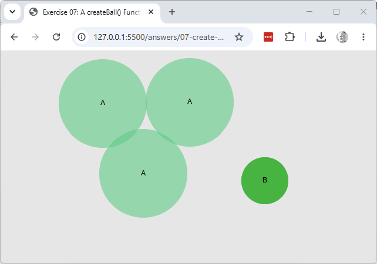
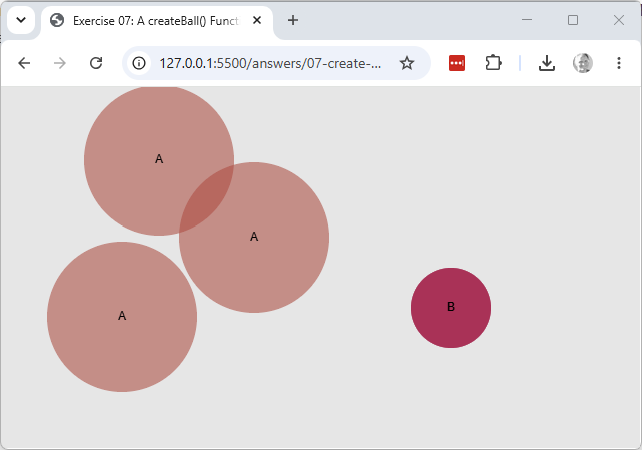

Explore & modify
Working copy: exercises/07-create-ball-function/.
- Add a fifth parameter to
createBall()(e.g. alabelstring), store it as a property, and pass a label when you call it insetup(). Display the label near the ball withtext()every time the ball itself is displayed. - Call
createBall()a second time insetup(), storing the result in a second variable (e.g.ball2), giving it a different randomcolor()object from the first ball's. You'll need a second display step to show it — add one, and confirm both balls appear when you click. Note in a comment what's awkward about having two separate ball variables as more get added. - Look up
random()in the p5 reference. Instead of picking a random colour once insetup(), modifykeyPressed()so that every time a key is pressed, each ball'scolproperty is replaced with a new randomcolor()object — random red, green and blue values, with alpha (150) kept fixed.keyPressed()should still clear the background as before; click again afterwards and confirm each ball reappears in its new colour.

